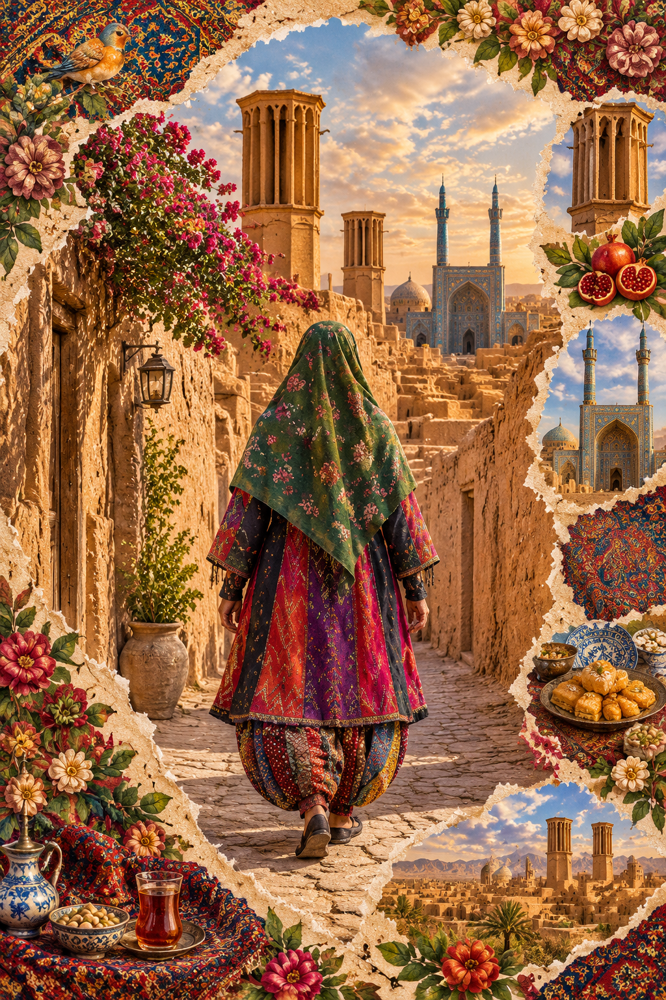
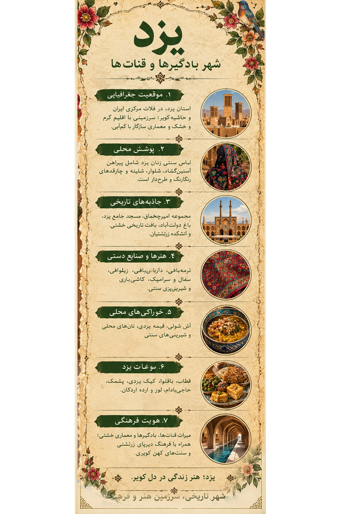

یزد Yazd
نقشِ ماندگار در دلِ کویر Timeless Patterns in the Heart of the Desert
سفری تصویری به سرزمین بادگیرها، کوچههای خشتی، پوششهای سنتی و میراث فرهنگی زنده. A visual journey through windcatchers, adobe alleys, traditional clothing and a living cultural heritage.
۱. اثر هنری یزد 1. The Yazd Artwork

اثر هنری از مجموعهٔ «ایران، هزار رنگ» Artwork from the Iran, A Thousand Colors collection

لیبل اطلاعات فرهنگی یزد Yazd cultural information label
۲. پوشش سنتی زنان یزد 2. Traditional Women's Clothing in Yazd
پوشش سنتی زنان یزد در دورهها و نواحی مختلف شکلهای گوناگونی داشته است. در نمونههای تاریخی، پیراهن، شلوار، دامنهای چیندار مانند شلیته، چارقد یا روسری و چادر از اجزایی هستند که ممکن است دیده شوند. نوع پارچه، رنگ، تزئینات و شیوهٔ پوشیدن لباس با توجه به محل زندگی، دورهٔ تاریخی و شرایط اجتماعی تفاوت داشته است. Traditional women's clothing in Yazd has varied across periods and localities. Historical examples may include shirts, trousers, gathered skirts such as shaliteh, headscarves and chadors. Fabrics, colors, decoration and ways of wearing these garments differed according to locality, historical period and social context.
لباس و دامن Garments and Skirts
دامنهای چیندار و شلوارهای گشاد در برخی نمونههای پوشش سنتی دیده میشوند؛ اما نباید آنها را به تمام زنان و همهٔ دورهها تعمیم داد. Gathered skirts and loose trousers appear in some traditional examples, but they should not be generalized to all women or periods.
چارقد و پوشش سر Headscarves and Head Coverings
چارقدها و روسریها از نظر جنس، رنگ و طرح متنوع بودهاند. برای بازسازی دقیق هر لباس، بهتر است به نمونههای مستند همان ناحیه و دوره مراجعه شود. Headscarves varied in fabric, color and pattern. Accurate reconstruction should rely on documented examples from the relevant locality and period.
پوشش زنان زرتشتی یزد Clothing of Zoroastrian Women in Yazd
جامعهٔ زرتشتی یزد بخشی مهم از تاریخ و فرهنگ این استان است. در برخی نمونههای تاریخی پوشاک زنان زرتشتی، دامنهای رنگی یا راهراه، پیراهن، شلوار و پوششهای سر مانند لچک و مکنی دیده میشود. شکل و ترکیب این اجزا در دورهها و خانوادههای مختلف یکسان نبوده است. بنابراین برای معرفی دقیق این پوشش، باید به عکسها، مجموعههای موزهای و پژوهشهای مستند دربارهٔ لباس زرتشتیان تکیه کرد. Yazd's Zoroastrian community is an important part of the province's history and culture. Some historical examples of Zoroastrian women's clothing show colorful or striped skirts, shirts, trousers and head coverings such as lachaks and maknis. These elements were not identical across periods or families. Reliable photographs, museum collections and documented studies are therefore essential for an accurate description.
۳. شهرها و روستاهای تاریخی 3. Historic Towns and Villages
میبد Meybod
میبد با نارینقلعه، بافت تاریخی، سفال و سرامیک و زیلوبافی شناخته میشود. نقشهای هندسی و هنرهای دستساز این شهر بخشی از هویت فرهنگی منطقهاند. Meybod is known for Narin Castle, its historic fabric, pottery, ceramics and zilu weaving. Geometric patterns and handicrafts are part of the town's cultural identity.
خرانق Kharanaq
روستایی تاریخی با خانههای خشتی، گذرهای قدیمی و چشماندازی که با معماری کویری پیوند دارد. A historic village with adobe houses, old passages and a landscape closely connected to desert architecture.
فهرج Fahraj
فهرج با بافت تاریخی و مسجد کهن خود از نقاط مهم پیرامون شهر یزد است. Fahraj is known for its historic settlement and ancient mosque near the city of Yazd.
تفت و چکچک Taft and Chak Chak
تفت در دامنههای شیرکوه قرار دارد و چکچک از زیارتگاههای مهم زرتشتیان در کوهستانهای استان یزد است. Taft lies near the Shirkuh foothills, while Chak Chak is an important Zoroastrian pilgrimage site in the province's mountains.
۴. آثار تاریخی و طبیعت 4. Historic Sites and Nature
بافت تاریخی یزد Historic City of Yazd
خانههای خشتی، کوچههای باریک، ساباطها و بادگیرها، نمونههایی از سازگاری معماری با آبوهوای گرم و خشکاند. بافت تاریخی یزد در فهرست میراث جهانی یونسکو ثبت شده است. Adobe houses, narrow alleys, shaded passages and windcatchers illustrate architectural adaptation to a hot, dry climate. The Historic City of Yazd is a UNESCO World Heritage Site.
مجموعهٔ امیرچخماق Amir Chakhmaq Complex
مجموعهای شاخص با نمای طاقدار و ساختار متقارن که به یکی از شناختهشدهترین نشانههای تصویری یزد تبدیل شده است. A landmark complex with an arched facade and a distinctive symmetrical composition, widely associated with Yazd.
باغ دولتآباد Dowlat Abad Garden
باغی تاریخی با عمارت، فضای سبز و بادگیر بلند که پیوند معماری، آب و طبیعت را در اقلیم کویری نشان میدهد. A historic garden with a pavilion, greenery and a tall windcatcher, illustrating the relationship between architecture, water and nature in a desert environment.
مسجد جامع یزد Jameh Mosque of Yazd
با کاشیکاریهای فیروزهای، کتیبهها و منارههای بلند، از مهمترین بناهای تاریخی و هنری شهر است. With turquoise tilework, inscriptions and tall minarets, it is one of the city's major historic and artistic landmarks.
آتشکده و میراث زرتشتی Fire Temple and Zoroastrian Heritage
آتشکدهٔ زرتشتیان یزد و دیگر مکانهای مرتبط با این جامعه، برای شناخت تنوع دینی و میراث فرهنگی منطقه اهمیت دارند. Yazd's Zoroastrian Fire Temple and related sites are important for understanding the region's religious diversity and cultural heritage.
قناتها و بادگیرها Qanats and Windcatchers
قناتها برای انتقال آب در سرزمین خشک و بادگیرها برای تهویهٔ طبیعی ساختمانها به کار میرفتند؛ هر دو بخشی از دانش بومی سازگاری با محیطاند. Qanats carried water across arid landscapes, while windcatchers helped ventilate buildings naturally. Both reflect local knowledge of environmental adaptation.
۵. غذاهای محلی و شیرینیها 5. Local Food and Sweets
آش شولی Shooli Soup
یکی از غذاهای شناختهشدهٔ یزد که معمولاً با سبزی، چغندر و چاشنیهایی مانند سرکه تهیه میشود. A well-known Yazdi soup usually made with herbs, beetroot and seasonings such as vinegar.
قیمهٔ نخود یزدی Yazdi Chickpea Stew
خورشی محلی که نخود در آن نقش اصلی دارد و از غذاهای شاخص آشپزی سنتی یزد به شمار میرود. A local stew in which chickpeas are a key ingredient, representing traditional Yazdi cooking.
قطاب Qottab
شیرینی مغزدار با عطری از هل و مغزهایی مانند بادام؛ از مشهورترین سوغات خوراکی یزد. A filled pastry flavored with cardamom and nuts such as almonds, and one of Yazd's best-known edible souvenirs.
باقلوا و حاجیبادام Baklava and Haji Badam
شیرینیهای سنتی با بافت و طعم متفاوت که در کنار دیگر محصولات قنادی یزد عرضه میشوند. Traditional sweets with distinct textures and flavors, sold alongside other Yazdi confectionery.
کیک یزدی و پشمک Yazdi Cake and Pashmak
کیک یزدی با عطر هل و گلاب و پشمک با بافت رشتهای و لطیف، از شیرینیهای شناختهشدهٔ این منطقهاند. Yazdi cake, flavored with cardamom and rosewater, and delicate strand-like pashmak are well-known regional sweets.
۶. سوغات، محصولات و صنایعدستی 6. Souvenirs, Products and Handicrafts
زیلوبافی میبد Meybod Zilu Weaving
زیراندازی دستباف با نقشهای هندسی که از هنرهای شاخص میبد و از جلوههای مهم میراث نساجی منطقه است. A handwoven floor covering with geometric patterns, representing Meybod's textile heritage.
ترمهبافی Termeh Weaving
پارچهای ظریف و نقشدار که در محصولات تزئینی و کاربردهای گوناگون به کار میرود. A finely patterned textile used in decorative and practical products.
سفال و سرامیک Pottery and Ceramics
از هنرهای شناختهشدهٔ میبد که برخی محصولات آن با نقشهای هندسی، پرندگان و طرحهای الهامگرفته از طبیعت تزئین میشوند. A well-known Meybod craft; some pieces feature geometric designs, birds and motifs inspired by nature.
داراییبافی و شمدبافی Daraei and Shamad Weaving
از بافتهای سنتی منطقه که نمونههایی از مهارت نساجی و استفاده از رنگ و نقش در زندگی روزمره را نشان میدهند. Traditional textile crafts that demonstrate local weaving skills and the use of color and pattern in everyday life.
شیرینیهای سنتی Traditional Sweets
قطاب، باقلوا، حاجیبادام، پشمک و کیک یزدی از سوغات خوراکی شناختهشدهٔ این استاناند. Qottab, baklava, haji badam, pashmak and Yazdi cake are among the province's well-known edible souvenirs.
۷. منابع و مطالعهٔ بیشتر 7. Sources and Further Reading
برای آشنایی بیشتر با میراث تاریخی، معماری و فرهنگ یزد، منابع زیر نقطهٔ شروع مناسبی هستند. The following resources are useful starting points for learning about Yazd's historical, architectural and cultural heritage.
- UNESCO — Historic City of Yazd
- Encyclopaedia Iranica — پژوهشهای تاریخ و فرهنگ ایران
- Visit Iran — معرفی میراث فرهنگی و گردشگری ایران
- Textile Research Centre, Leiden — پژوهش دربارهٔ پوشاک و منسوجات